2.1 Compiling
MIDlets are compiled using a standard Java SDK. You can use the IDE tool of your choice(Eclipse, Netbeans, JBuilder 2005 Developer)
The following screen appears when the FileHandler MIDlet is started. The application checks first if the device supports JSR75 FileConnection Optional Package. One of system properties that application shows is the file separator character(s) for the underlying platform. For example, "\" would be returned on a Windows OS based platform, and "/" would be returned on a Unix system.
Start-Up Screen
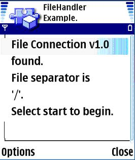
2.2 Granting access
In order to work around with files systems, user must grant access to it. MIDP security settings will determine if and how often a user will be prompted. By pressing <start> command, Java virtual machine prompts dialog where access to local file system is asked. This is only the access dialog for FileSystemRegistry class. Access prompts can and will occur further on using this application. All IO operations to local file system must be prompted at least once.
Granting access to local file system
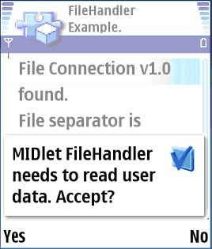
If user denies the access, application cannot deliver the functionality and requests to close.
Denied access to local file system
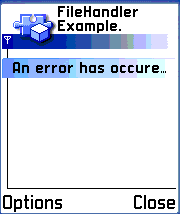
2.3 Selecting volume to work with
When the access to read local file system is granted, the user must select a volume to work with. All actions to come are targeted on selected volume. The user may select volume from the list and proceed by pressing <select> key on keyboard.
Selecting volume
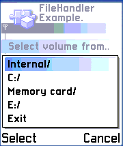
2.4 Mounting or unmounting media
FileHandler application can react in volume changes on system by implementing FileSystemListener interface. If a mounted volume is removed or new media is inserted, an info screen is displayed. The volume list is also updated and application returns to volume selection.
2.5 Commands to selected volume
When the volume is selected, basic file handling commands can be invoked. Certain commands require the user to select target from a list. This is done by pressing Up/down keys on the device’s keyboard. A reverse colored bar indicates the file/folder that is currently selected. If the user has not selected a file or folder for the command is to invoke, a “Nothing to do.” message is shown on screen.
The available commands are as follows:
2.5.1 Back
Changes the directory up one level. List Directory is also invoked.
2.5.2 List Directory
Lists the current folder’s/Root directory’s content. A “/’” at the end of the file name indicates that it’s a folder.
List folder’s / Root’s content
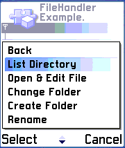
2.5.3 Open & Edit file
Opens the selected text file and shows its content on an editable textbox. The user can edit this text as desired. If the user tries to open files other than text files, “Only text files are supported.” info message is shown on the screen. The application also checks that the requested text file’s size does not exceed 4k bytes. If that is the case, a “File '<file>' is larger than 4k." info message is shown on the screen. “Open & Edit file” command can also be invoked by pressing the <select> key on the keyboard. If the user selects <Done>, all text on the editable textbox is overwritten into the file that was opened. This is done in Delete/Create new manner. The file being processed is first deleted and then recreated with new given context. If the user cancels this function by pressing <Back> key, a “Command was Cancelled.” message is shown on the screen. The application also returns to the screen in which this function was initially invoked. If the selected text file is READONLY, an IOException is shown on the screen, but the application runs normally.
Open & Edit selected text file
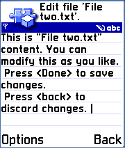
2.5.4 Change folder
The Change Folder command opens the selected folder and lists its content. This command can also be invoked by pressing <select> key on keyboard.
Folder changed
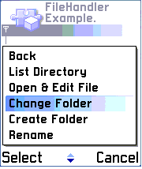
2.5.5 Create Folder
The Create Folder command creates a new folder in the location where user is at the moment. When this command is invoked, dialog is shown where user can enter a name for the folder. The default is “New Folder”. If the user gives an empty name, the “Incorrect name or Empty.” info message is shown on the screen. If the user cancels this function by pressing the <Back> key, a “Command was Cancelled.” message is shown on the screen. When the user selects <Done>, the application creates a new folder and shows a “Directory ‘<new folder>’ created.” info message. The application also returns to the screen in which this function was initially invoked. The maximum name size is 50 characters.
Create new folder
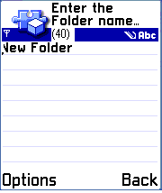
2.5.6 Rename
The Rename command renames selected file or folder according to the user’s input. When this command is invoked, a dialog is shown in which user can type new name. The default is selected folder’s name. If user gives an empty name, the “Incorrect name or Empty.” info message in shown on the screen. If user cancels this function by pressing the <back> key, a “Command was Cancelled.” message is shown on the screen. The application also returns to the screen in which this function was initially invoked with clear screen. An info note “<type> ‘<old name>’ renamed as ‘<new name>’.” is shown. The maximum name size is 50 characters.
Rename selected file / folder
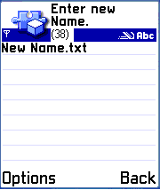
2.5.7 Permissions
All files and folders have read/write permissions. By selecting a file or folder on the directory list and by invoking this function, permissions are shown on the screen. If file or folder is not editable, it has a READONLY flag set and no modification-based functions (rename, delete, edit) can be applied to it.
Selected file’s read & write permissions
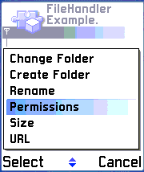
2.5.8 Size
By selecting a file or folder on the directory list and by invoking this function, the size of the file or folder in bytes is shown on the screen. If selected item is a folder, the folder size including subdirectories is calculated and shown.
Selected file’s size
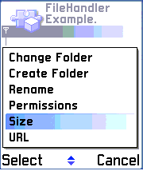
2.5.9 URL
The URL command returns the full URL of the selected file or folder including the scheme. The print is in an escaped ASCII format as defined by RFC 2396. The resulting URL looks as follows:
file://<host>/<root>/<directory>/<filename.extension>
or
file://<host>/<root>/<directory>/<directoryname>/
Selected file’s URL
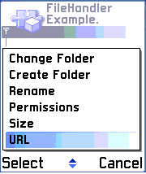
2.5.10 Delete
By selecting a file or folder on the directory list and by invoking this function, a selection is deleted. If the selected file has a READONLY flag set, the application cannot delete it and the following info screen is shown. This also happens if a folder is not empty or has a READONLY flag set.
Delete selection was not possible
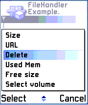
If it is possible to delete the selected file or folder, the following info screen is shown and deletion will take place.
Delete selection was done successfully

2.5.11 Used Mem
The Used Mem command determines the used memory of a file system on which the connection's target resides. This may only be an estimate and varies based on platform-specific file system blocking and metadata information.
Used Memory
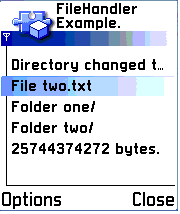
2.5.12 Free size
The free size command determines the free memory that is available on the file system on which the file or directory resides. This may only be an estimate and varies based on platform-specific file system blocking and metadata information.
Free size
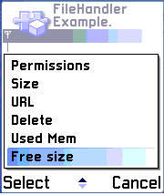
2.5.13 Select volume
The Select volume function returns to the screen on which volumes can be selected.
Select volume
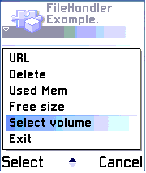